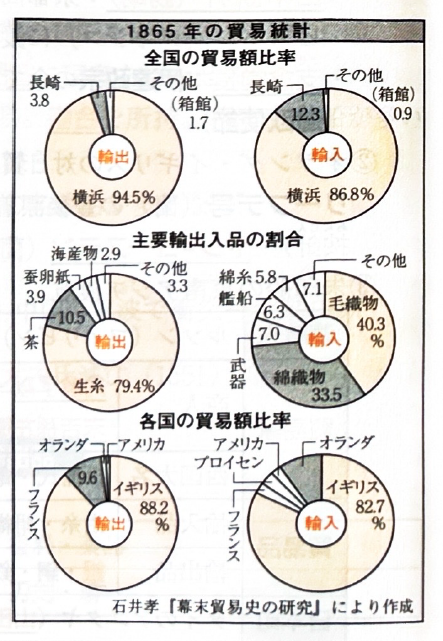
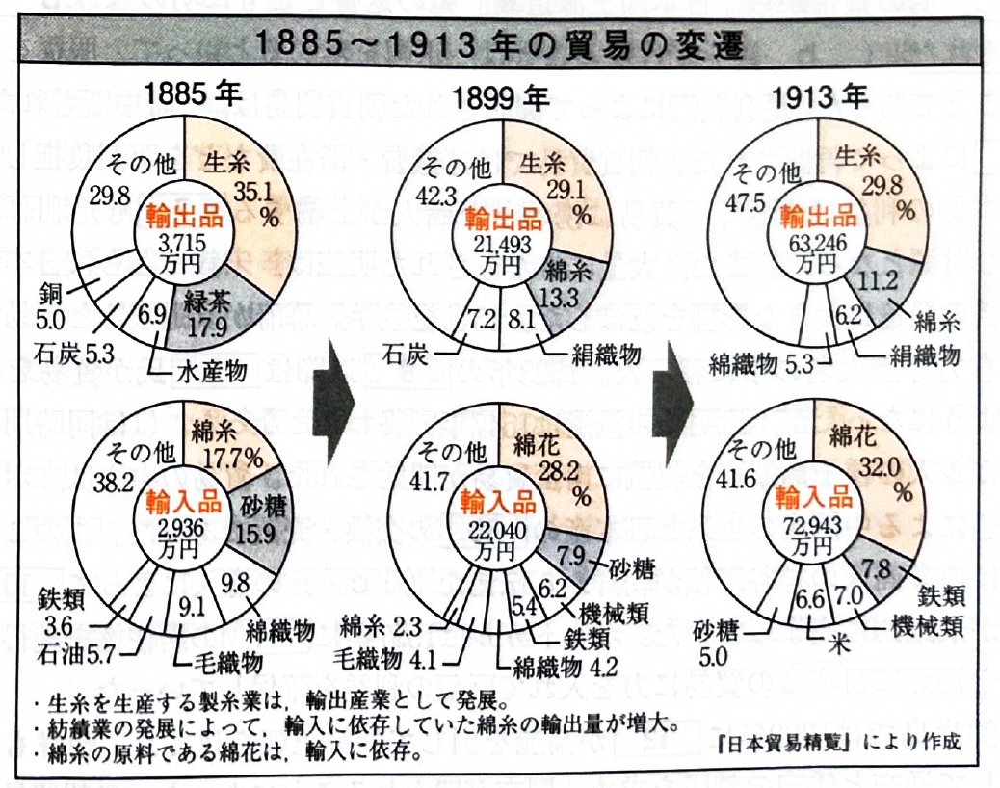

011 貿易史
【平清盛の貿易振興】 摂津の大輪田泊を改修し、安芸の音戸の瀬戸を開削した。
【人的交流】 栄西や道元、俊芿などの僧侶が渡宋し、中国からは蘭渓道隆や無学祖元（ともに臨済宗）が来日した。また、東大寺大仏修復のために工人の陳和卿が来日した。
鎌倉幕府が建長寺船を、のちに足利尊氏が天竜寺船を元に派遣した。当時の様子は、韓国沖で発見された新安沈船（大量の銅銭・陶磁器を積載）からもうかがえる。人的交流では、臨済宗の一山一寧が来日した。
【倭寇の活動】 対馬・壱岐・肥前松浦を拠点とする前期倭寇が活動し、明朝は日本にその禁圧を求めた。
【勘合貿易の変遷】
1401年：足利義満が遣明船（祖阿・肥富）を派遣。
1404年：正式な使節を証明する勘合を用いた朝貢貿易が開始。
中断と再開：4代足利義持が中断したが、6代足利義教が再開。
1523年：寧波の乱（大内氏と細川氏の衝突）後、大内氏が貿易を独占するが、大内氏滅亡(1551)により途絶した。
【通商開拓の試み】 京都の商人田中勝介がノビスパン（メキシコ）へ、伊達政宗の家臣支倉常長がヨーロッパへ渡ったが、通商交渉は成功しなかった。
【蘭・英の参入と朱印船】 1600年にリーフデ号が豊後に漂着。乗組員のウィリアム・アダムズやヤン・ヨーステンの尽力で平戸に商館が開設された。
また、東南アジアへ渡航する朱印船貿易が盛んになり、タイのアユタヤなどには山田長政らが活躍する日本町が形成された。
1604年：糸割符制度を導入し、ポルトガルの生糸利益を抑制。
1616年：ヨーロッパ船の寄港地を平戸と長崎に限定。
1623年：イギリスが競争に敗れ撤退。
1624年：スペイン船の来航を禁止。
1633年：奉書船以外の海外渡航などを禁じる（第1次鎖国令）。
1635年：日本人の海外渡航と帰国を全面禁止（第3次鎖国令）。
1639年：ポルトガル船の来航を禁止（第5次鎖国令）。
1641年：平戸のオランダ商館を長崎の出島に移す（鎖国の完成）。
居留地貿易の形式をとり、相手国はイギリスが約80%を占めた（アメリカは南北戦争で出遅れ）。
当初は輸出超過で金の流出が問題となり、幕府は五品江戸廻送令を出した。1866年の改税約書で関税率が5%に引き下げられると、輸入超過に転じた。
図を表示する（1865年の貿易統計）

1890年：綿糸の生産量が輸入量を上回る。
1894年：綿糸輸出関税免除法が公布され、中国などへの輸出が急増。
1896年：綿花輸入関税免除法により、インド産などの安価な綿花輸入が急増（国内綿作は衰退）。
1897年：綿糸の輸出量が輸入量を上回る。
1909年：綿布の輸出額が輸入額を超え、生糸の輸出量が中国を抜き世界第1位となる。
図を表示する（1885〜1913年の貿易の変遷）

1914年からの第一次世界大戦により大戦景気となり、大幅な輸出超過で債務国から債権国へ転換。しかし1919年以降はヨーロッパの復興により再び輸入超過となる。
1929年の世界恐慌によって生糸の対米輸出が激減し、昭和恐慌に陥った。
1931年、犬養内閣（高橋是清蔵相）が金輸出再禁止を行い管理通貨制度へ移行。円安を利用して輸出を促進したが、イギリスなどからソーシャル・ダンピングと非難され、列強のブロック経済化を招いた。
-
各時代の貿易と主な輸出入品
平安末期から江戸幕末にかけての、国別の主要な貿易品です。時代・貿易名 主な輸入品 主な輸出品 日宋貿易
（平安末期〜）宋銭、陶磁器、高級織物、香料・薬品 砂金、硫黄、水銀、漆器、刀剣 日明貿易
（15世紀初期〜）銅銭（明銭）、生糸、陶磁器、書画 硫黄、銅、刀剣、扇、漆器 日朝貿易
（14世紀末〜）木綿（綿布）、大蔵経、朝鮮人参 銅、硫黄、胡椒・香木（※琉球経由） 南蛮貿易
（16世紀中期〜）生糸（中国産）、鉄砲、火薬、香料 銀、刀剣、漆器、硫黄 長崎貿易
（江戸時代）生糸、絹織物、薬品、砂糖、書籍 銀、銅、金、海産物（俵物） 開港後の貿易
（江戸幕末）毛織物、綿織物、武器、艦船 生糸、茶、蚕卵紙、海産物